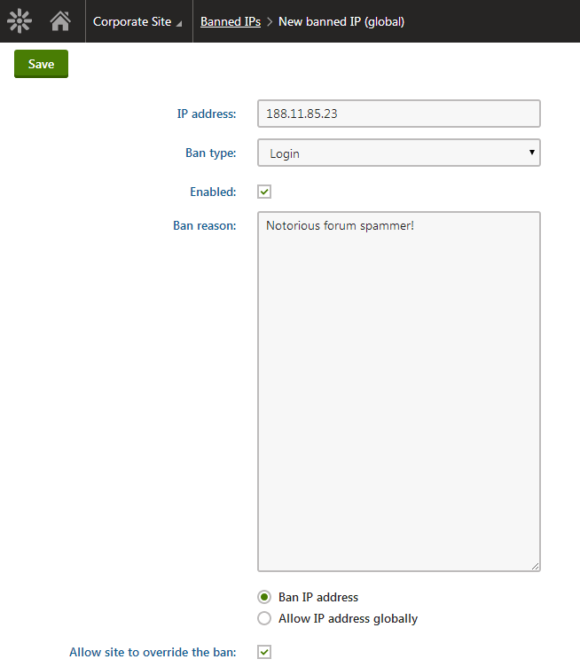

Banning IP addresses
The Banned IPs functionality is useful when you want to prevent users with certain IP addresses from accessing or using your website in a certain way. This typically happens when a user posts offensive material on a website (e.g. on a forum), harasses site members or behaves in some other unwanted way.
IP banning can also be used to restrict access to your websites from certain areas of the world. These bans can be set either for individual websites or globally for all websites in the system.
Enabling Banned IPs
To enable this functionality, select the Enable banned IPs check-box in Settings -> Security & Membership -> Protection.
Users attempting to perform an action from an IP address that is banned will get a page with a message displayed in their browsers (the HTTP response code of the page will be 403.6). The default banned IPs redirect page can be found at ~/CMSMessages/BannedIP.aspx. You can create your own page and set its URL using the Redirect banned IPs to URL setting.
Banning IP addresses
Open the Banned IPs application.
Click New banned IP.
Enter the required details:

Banning an IP addressClick Save.
Now if you go back to the list of banned IPs, you should see the newly created record present in the list.
Finding users' IP addresses
If you wish to find the IP address of a user responsible for a certain event:
Open the Event log application.
Find the event you are interested in.
The IP address of the user who caused the event has its own column in the displayed table.
For example, if you want to find a user who often uses Bad words, enter BADWORD into the Event code field of the event log filter and make sure Contains is selected. This displays a list of all Bad word violations and all relevant information including user names and their IP addresses.
To find the IP address used by a specific user when they last signed in:
Open the Users application.
Edit the user whose IP address you wish to find.
You can find it on the General tab in the Last sign-in information field.
This can be useful if you get multiple abuse reports about some users and want to quickly find their IP address.